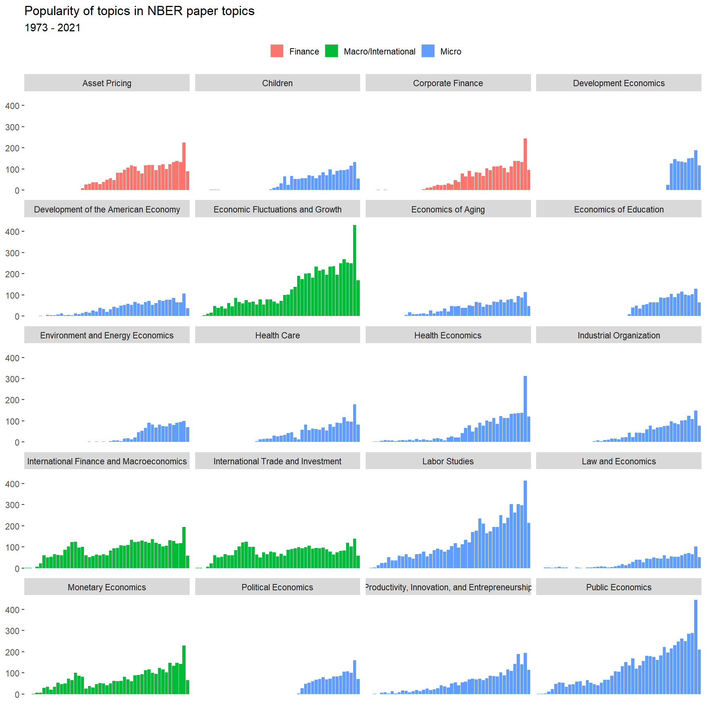
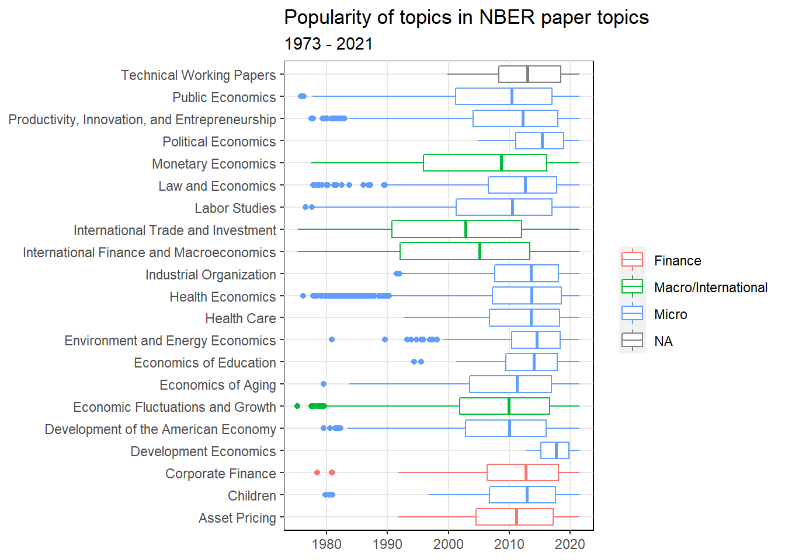
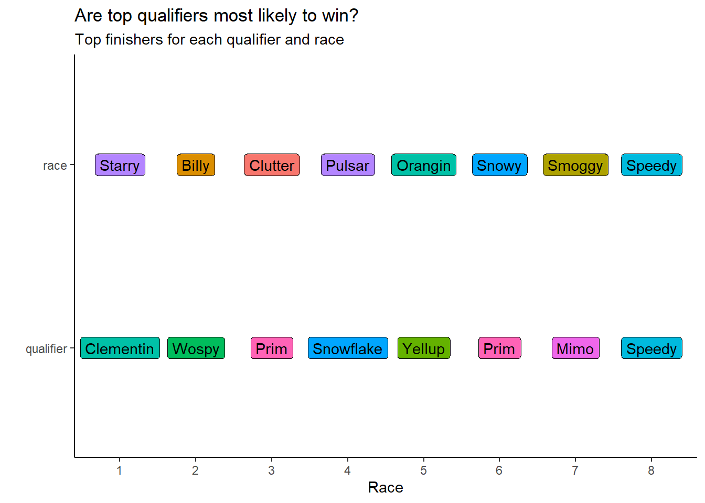

| to be filled |
Five datasets are included in this Tidy Tuesday exercise: papers, authors, programs, paper_authors, and paper_programs. These datasets describe papers published by NBER starting in 1973 through 2021.
Looking through these datasets, I’m most immediately interested in finding the most prolific NBER authors and the popularity of topics over time.
I’ll start with a full-join between paper_authors and papers in order to see if there are any NAs. Then I’ll join this new table (called attribution) to authors to have a table with author names and publications (called complete_attr). Finally, I’ll add a complete date with format MM/YYYY so I can test which individual months had the highest research output.
attribution <- full_join(paper_authors, papers, by = "paper")
complete_attr <- full_join(attribution, authors, by = "author")
complete_attr$date <- paste(complete_attr$month, complete_attr$year, sep = "/")
complete_attr$date <- my(complete_attr$date)# create dataframe by joining paper_program and programs
popular_topic <- full_join(paper_programs, programs, by = "program")
#most popular program description
prog_descrip <- popular_topic %>% group_by(program_desc) %>% count() %>% arrange(desc(n))
prog_descrip <- prog_descrip %>% rename("papers" = n)
#most popular program category
prog_cat <- popular_topic %>% group_by(program_category) %>% count() %>% arrange(desc(n))
prog_cat <- prog_cat %>% rename("papers" = n)
#test <- topic_time %>% drop_na(program) %>% select(paper,date,program_category,program_desc)
rmarkdown::paged_table(prog_descrip)rmarkdown::paged_table(prog_cat)Finally, let’s plot!
Which topics are most popular over time?
#join complete_attr with popular_topic. Use a geom_point in ggplot with different colors for different topics
# papers are counted more than once here. We're looking at publication topics first though, so I'll leave as is and then change so we can see unique papers
topic_time <- left_join(papers, popular_topic, by = "paper")
topic_time$date <- paste(topic_time$month, topic_time$year, sep = "/")
topic_time$date <- my(topic_time$date)
topic_time$year <- lubridate::year(topic_time$date)
test <- topic_time %>%
select(date,program_desc, program_category) %>%
count(date, program_desc, program_category, sort=TRUE) %>%
drop_na()
# This plot needs to be rescales, but it's very interesting to see the color shift by topic over time. Look at Macro becoming poular during recession periods
plot1 <- topic_time %>%
select(date,program_desc, program_category, year) %>%
count(date, program_desc, program_category, year, sort=TRUE) %>%
drop_na() %>%
ggplot(aes(x = factor(year), y = n, fill = program_category))+
geom_bar(stat = 'identity')+
facet_wrap(~program_desc, nrow = 5) +
theme(axis.ticks.x = element_blank(),
axis.text.x = element_blank(),
legend.title = element_blank(),
legend.position = "top",
legend.key = element_rect(),
legend.key.size = (unit(0.02, "npc")),
panel.grid.major = element_blank(),
panel.grid.minor = element_blank(),
panel.background = element_rect(fill = "#FFFFFF"))+
labs(title = "Popularity of topics in NBER paper topics", subtitle = "1973 - 2021", x = NULL, y = NULL)
plot1
Another way to show popularity of paper topics over time:
plot3 <- topic_time %>% drop_na(program) %>%
ggplot(aes(x = date, y = program_desc, color = program_category))+
geom_boxplot()+
theme(legend.title = element_blank(),
panel.grid.major = element_line(color = "#e6e6e6"),
panel.grid.minor = element_blank(),
panel.background = element_rect(fill = "#FFFFFF", color = "black"))+
labs(title = "Popularity of topics in NBER paper topics", subtitle = "1973 - 2021", x = NULL, y = NULL)
plot3
How often do authors publish with NBER?
josh <- most_pubs %>% filter(author == "w0748.2")
distribution <- most_pubs %>%
ggplot(aes(x = factor(n), y = n))+
geom_bar(stat = "identity", fill = "#619CFF")+
theme(axis.ticks.x = element_blank(),
axis.text.x = element_blank(),
panel.grid.major.y = element_line(linetype = "dashed", color = "black"),
panel.grid.minor = element_blank(),
panel.background = element_rect(fill = "#FFFFFF"))+
geom_bar(data=josh, stat = "identity",
aes(x=factor(n), y=n),
fill = "#F8766D")+
geom_text(x = 2, y = -200,
label = "0")+
geom_text(x = 60, y = -200,
label = "60")+
geom_text(x = 100, y = -200,
label = "120")+
geom_text(aes(x=92, y = 1500, label = "Joshua Aizenman, 191 Papers"))+
geom_segment(x = 110, xend = 113,
y = 1000, yend = 250,
size = 1, color = "#BA0C2F",
arrow = arrow(length = unit(0.02, "npc"),
type = "closed"))+
labs(title = "Distribution of Publications", subtitle = "How many papers do authors publish in NBER?", x = "Papers", y = "Authors" )
distribution